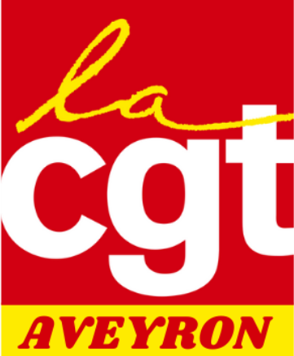

Je m'inscris au bus
Choisis ton lieu de départ :
Bus au départ de Decazeville
Bus au départ de Millau
Bus au départ de Villefranche-de-Rouergue

Manifestation à Rodez, 14h30, Jardin public. Réserve ta place dans le bus de ton Union Locale : Decazeville, Millau ou Villefranche-de-Rouergue.
Choisis ton lieu de départ :